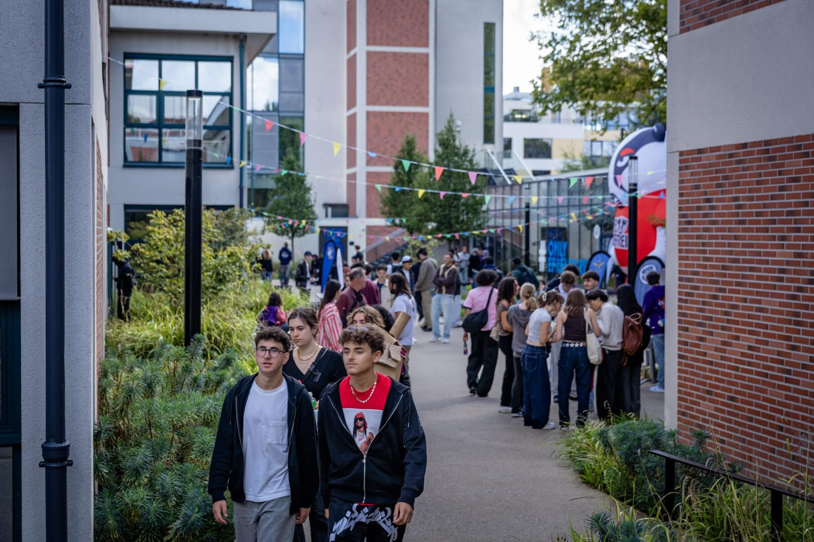

LES FORMATIONS
Former les
architectes d'un
monde complexe
L'Efrei propose une offre de formation complète et diversifiée, couvrant l'ensemble des métiers du
numérique à travers ses programmes Grande École, Bachelors et Mastères. L'école se distingue par une
pédagogie axée sur l'hybridation des compétences, alliant une expertise technique de pointe à une solide
culture managériale. Les étudiants bénéficient d'un accompagnement personnalisé et de nombreux
partenariats internationaux pour construire un parcours académique sur mesure. Grâce à une immersion
professionnelle constante, notamment via l'alternance et les stages, les diplômés affichent un taux
d'insertion exceptionnel dans des secteurs en pleine expansion. L'établissement mise également sur une
vie associative riche et des infrastructures modernes pour favoriser l'innovation et l'épanouissement
personnel. En rejoignant ces cursus, vous intégrez un écosystème dynamique tourné vers les enjeux
technologiques et sociétaux de demain.
